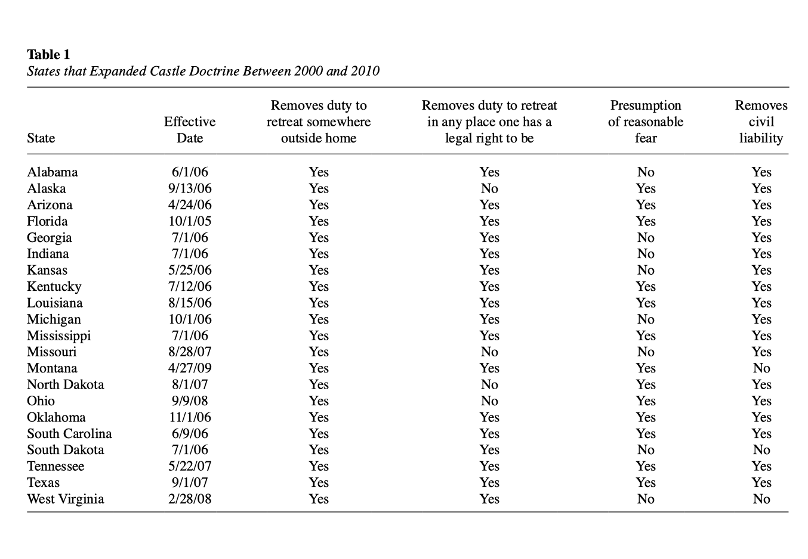
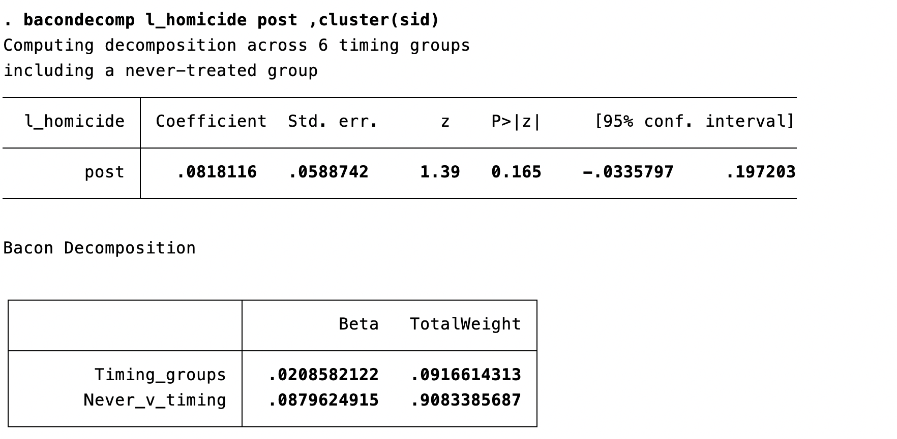
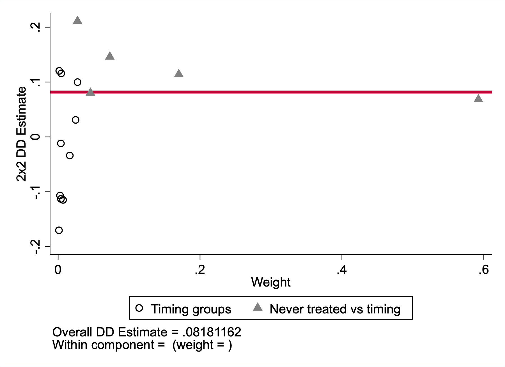
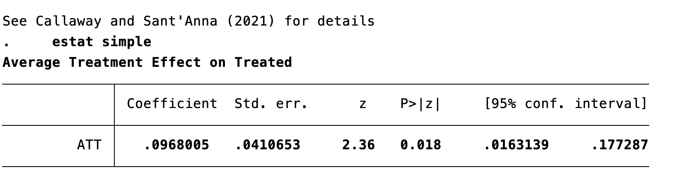

SW Chapter 10 (Part 3)
Spring 2026
Last class, we covered difference-in-differences (DiD):
Today: extending fixed effects — time FEs, clustered inference, and where modern DiD is heading.
Recall: with entity fixed effects, we give each unit its own intercept \(\alpha_i\).
Mathematically, this is demeaning — subtracting each entity’s time-average from its observations:
\[[y_{it} - \bar{y}_i] = \beta_1[x_{it} - \bar{x}_i] + [u_{it} - \bar{u}_i]\]
Because \(\alpha_i - \bar{\alpha}_i = 0\), the fixed effect drops out completely.
The Within Estimator
This is why FE is called the within estimator — we’re using variation within each entity over time, not variation between entities.
Now: What if we also want to control for shocks that hit all entities equally in the same period?
Examples of entity-invariant time shocks:
Add time fixed effects \(\lambda_t\): a dummy for each time period.
\[y_{it} = \beta_1 x_{it} + \alpha_i + \lambda_t + u_{it}\]
Connection to DiD
The \(\delta_0 \cdot after_t\) term in the DiD regression is a (two-period) time fixed effect — it absorbs the common time trend affecting both groups.
A national recession hits all states in 2008. Unemployment rises everywhere:
| State | 2006 | 2008 | Change | 2008 Avg | 2008 State - Avg |
|---|---|---|---|---|---|
| Vermont | 5.2% | 7.8% | +2.6pp | 7.8% | 0.0pp |
| Ohio | 5.9% | 8.6% | +2.7pp | 7.8% | +0.8pp |
| Texas | 4.4% | 7.0% | +2.6pp | 7.8% | -0.8pp |
Vermont and Texas each rose 2.6pp; Ohio rose 2.7pp — an average of about 2.6pp across all three states. This common shock reflects national conditions, not any state policy. The small variation around that average is noise; the common component is not variation we want to exploit.
A year dummy for 2008 absorbs this common shift exactly. After removing the year mean, only within-year, across-state variation remains.
The Analogy to Entity FE
Entity FE removes: “Detroit is always high-crime regardless of unemployment” — a unit-specific level
Time FE removes: “2008 was a bad year for everyone” — a year-specific level
With both entity and time fixed effects:
\[y_{it} = \beta_1 x_{it} + \alpha_i + \lambda_t + u_{it}\]
Controlled for:
Not controlled for:
Knowledge Check
You estimate the effect of a state-level minimum wage increase on employment, with state and year fixed effects. What omitted variable could still bias your results?
Answer: A factor that varies across states and over time — e.g., a state-specific economic boom that coincides with the minimum wage increase. (Instructor: reveal verbally or advance slide.)
Option 1: Manual Demeaning
Demean your data by hand (subtract entity means), then estimate OLS on the demeaned data.
Why This Is Usually Not Recommended
It is easy to make mistakes, hard to extend cleanly once you add time fixed effects or clustered standard errors, and harder for someone else to read and audit later. It is useful for understanding the estimator, but not the default workflow for real applied work.
Manual demeaning reproduces the FE coefficient, but naive OLS on demeaned data may also mishandle degrees of freedom and therefore inference unless you adjust things correctly.
areg vs. xtreg fe — Are They the Same?
For a single level of fixed effects, areg and xtreg fe give identical point estimates and standard errors. They differ in how they report R² (different denominators) and in small-sample degrees-of-freedom adjustments for clustered SEs. For this course, treat them as equivalent.
Key Principle
In an entity fixed effects model, you do not need to include time-invariant covariates. They are already absorbed by the fixed effects.
Practical notes:
The Price of Entity FE
You cannot estimate the effect of variables that don’t change over time — gender, race, state geography, etc. The fixed effect absorbs them completely.
\[Y_{it} = \beta_1 X_{it} + \alpha_i + u_{it}, \quad i = 1, \ldots, n; \; t = 1, \ldots, T\]
If these hold, FE estimates are consistent and asymptotically normal for large \(n\).
Previously, we assumed observations were independent.
Autocorrelation Does Not Bias \(\hat{\beta}\)
The coefficients are still consistent — but our inference (standard errors, \(p\)-values, confidence intervals) is wrong. Typically: SEs are too small, so we reject too often.
Autocorrelation does not violate LS Assumption 2, which only requires independence across entities, not within.
Clustered standard errors allow for arbitrary correlation within entities.
Idea: Allow \(\omega_{it}\) and \(\omega_{is}\) (same entity, different times) to be correlated freely, while maintaining independence across entities.
In Stata:
Cluster in Panel Data
In this course, if you are using panel data, cluster standard errors at the entity level unless there is a strong reason not to. Failing to do so overstates precision and leads to false rejections.
Clustered on entity: block-diagonal error structure (2 entities × 3 periods):
| E1-t1 | E1-t2 | E1-t3 | E2-t1 | E2-t2 | E2-t3 | |
|---|---|---|---|---|---|---|
| E1-t1 | ✓ | ✓ | ✓ | 0 | 0 | 0 |
| E1-t2 | ✓ | ✓ | ✓ | 0 | 0 | 0 |
| E1-t3 | ✓ | ✓ | ✓ | 0 | 0 | 0 |
| E2-t1 | 0 | 0 | 0 | ✓ | ✓ | ✓ |
| E2-t2 | 0 | 0 | 0 | ✓ | ✓ | ✓ |
| E2-t3 | 0 | 0 | 0 | ✓ | ✓ | ✓ |
✓ = arbitrary covariance allowed · 0 = assumed independent (across-entity blocks)
| Regular OLS SEs | Clustered SEs | |
|---|---|---|
| Errors across observations | Must be independent | Must be independent across entities |
| Errors within an entity over time | Must be independent | Can be correlated freely |
| What is assumed | i.i.d. errors everywhere | i.i.d. across entities; anything within |
| Appropriate for panel data? | No — implausible | Yes — the standard approach |
Example: State-clustered standard errors assume that, in a given year, errors across states are independent, but errors over time within a state can be correlated freely.
Clustered SEs do not change the point estimates, only the standard errors. They are often larger than unclustered SEs when within-entity errors are positively correlated.
Wild bootstrap is a resampling method that repeatedly re-creates the test statistic in a way that respects the clustered error structure, which can improve inference when the number of clusters is small.
Research question: Do castle doctrine laws deter violent crime, or do they increase homicide?
Natural approach: Two-way FE regression: \[\log(\text{homicide rate}_{it}) = \beta_1 \cdot post_{it} + \alpha_i + \lambda_t + u_{it}\]
If treatment effects are homogeneous across states and stable over time, TWFE gives the right answer. But what if the effect in Florida looks different from the effect in Texas, or grows over time after adoption?

The Problem
This is staggered adoption with potentially heterogeneous treatment effects. What TWFE does under the hood — and when it fails — is the topic of this section.
The classic DiD has two groups and two periods. In practice, policies are often adopted by different units at different times — staggered adoption.
Toy analogy: States adopt a job training program in different years.
The natural approach is still two-way fixed effects (TWFE).
\[y_{it} = \beta_1 \cdot treated_{it} + \alpha_i + \lambda_t + u_{it}\]
Recent research (roughly 2018–2024) has shown that this “obvious” approach can produce severely misleading estimates — including wrong signs.
A job training program with a true effect that grows over time: +10 in year 1, +50 in year 2.
| 2018 | 2019 | 2020 | |
|---|---|---|---|
| No-treatment baseline | 100 | 105 | 110 |
| State E (treats in 2019) | 100 | 115 | 160 |
| State L (treats in 2020) | 100 | 105 | 120 |
TWFE takes a weighted average of all 2×2 DiD comparisons — including contaminated ones.
Valid comparison (E treated vs. L as control, 2018→2019): \[\underbrace{(115 - 100)}_{\Delta E} - \underbrace{(105 - 100)}_{\Delta L} = +10\]
Contaminated comparison (L treated vs. already-treated E as “control,” 2019→2020): \[\underbrace{(120 - 105)}_{\Delta L} - \underbrace{(160 - 115)}_{\Delta E} = -30\]
\[\hat{\beta}_{TWFE} = \tfrac{1}{2}(+10) + \tfrac{1}{2}(-30) = \mathbf{-10}\]
TWFE Gives the Wrong Sign
All true effects are positive (+10 or +50), but TWFE estimates −10 — the wrong sign.
Why? State E’s outcome rose by 45 from 2019→2020 because its treatment effect grew. TWFE treats this as a normal trend, making State L’s +15 gain look like a relative decline.
Goodman-Bacon (2021) showed TWFE is a weighted average of all possible 2×2 DiD comparisons. When treatment effects change over time, already-treated units used as “controls” introduce bias — and can receive negative weights.
Regression output

Diagnostic plot

Contrast: Stevenson and Wolfers (2006)
When looking at the impact of unilateral divorce on female suicide rates, the Bacon decomposition is much messier. The problematic timing-group comparisons get about 38% of the total weight, and the other major 2×2 pieces point in different directions. That is the kind of setting where staggered-adoption TWFE can become seriously misleading.
Several estimators have been developed to handle staggered adoption correctly:
Callaway and Sant’Anna (2021): Group-time-specific effects, then aggregate. Only uses not-yet-treated or never-treated units as controls.
Sun and Abraham (2021): Interaction-weighted estimator correcting for heterogeneous effects across adoption cohorts.
de Chaisemartin and D’Haultfoeuille (2020): Identifies which comparisons get negative weights and proposes robust alternatives.
All share one insight: never use already-treated units as controls.
Some of these methods effectively implement TWFE with restricted control groups (never-treated or not-yet-treated only) — preserving the fixed-effects machinery while eliminating the contaminated comparisons.
Beyond ECON3500
You won’t implement these in this course. If you use DiD in your research paper with staggered adoption, simply discussing the staggered adoption limitation is completely acceptable — you do not need to implement an alternative estimator. If you want to go further, the packages below are the standard options.
Current Stata packages (checked April 7, 2026): csdid (Callaway-Sant’Anna), eventstudyinteract (Sun-Abraham), did_multiplegt_stat / did_multiplegt_dyn (de Chaisemartin-D’Haultfoeuille).
Using Callaway and Sant’Anna’s estimator in Stata:

Interpretation: using not-yet-treated states as controls, the estimated effect of castle doctrine laws is about a 9.7% increase in homicide.
| Method | Data Required | What It Controls | Key Assumption | What Remains |
|---|---|---|---|---|
| DiD | 2 groups, 2 periods | Group differences; common time trend | Parallel trends | Group-specific time-varying shocks |
| Staggered DiD | Multiple groups, multiple adoption years | Group differences; cohort-specific time trends | Parallel trends by adoption cohort | Cohort-specific time-varying shocks |
| First Difference | Panel, 2 periods | All time-invariant entity factors | No time-varying OVB | Time-varying omitted variables |
| Entity FE | Panel, 2+ periods | All time-invariant entity factors | No time-varying OVB | Time-varying omitted variables |
| Time FE only | Panel or repeated cross-sections | Entity-invariant time shocks | No entity-specific time trends | Entity differences; time-varying confounders |
| Entity + Time FE | Panel, 2+ periods | Time-invariant entity factors + entity-invariant time shocks | No entity-and-time-varying OVB | Entity-time-specific shocks |
Difference-in-Differences:
First Differencing:
Fixed Effects:
Panel data almost always requires clustered standard errors. Unclustered SEs will usually be too small (though in some designs they can be too large), leading to false precision or false rejection.
With entity FE, you cannot estimate the effect of variables that do not vary over time. The fixed effect absorbs them.
Fixed effects only eliminate time-invariant omitted variables. Time-varying confounders can still bias your estimates.
ECON3500 | Chapter 10: FE Extensions